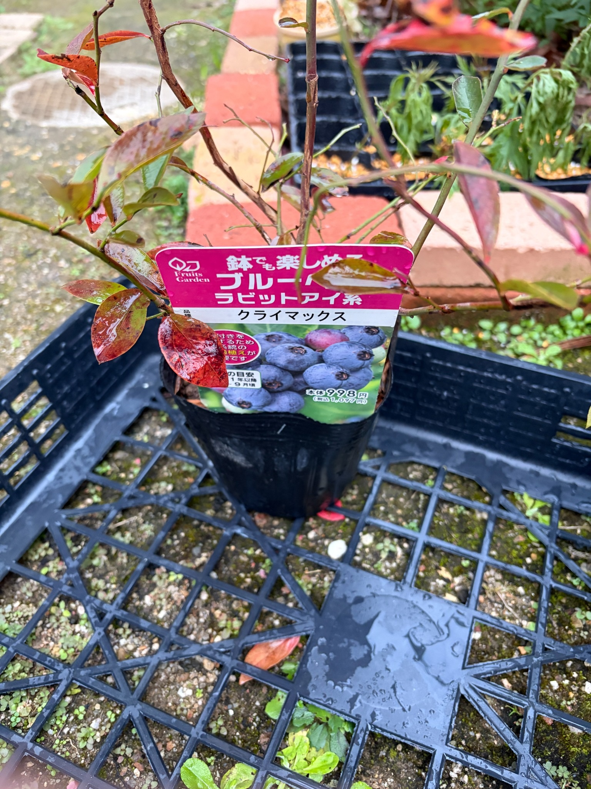

2025/12/13 ラビットアイ系ブルーベリー「クライマックス」を迎えました
ラビットアイ系ブルーベリーの「クライマックス」「プレミア」「メンデイト」の3品種を購入してきました。そのうちの一つが、今回から生育記録を始める「クライマックス」です。
これから庭で育てていくブルーベリーとして、まずは購入したときの姿を残しておきます。写真はまだ植え付け前で、黒い育苗ポットに入った状態です。後日植え付ける予定なので、この日が、わが家でのクライマックスの生育記録の始まりになります。
今はまだ、花が咲いたり、実が膨らんだりしている姿ではありません。枝の伸び方や残っている葉の色を眺めながら、この苗がこれからどのように育っていくのかを楽しみにしています。
実付きを考えて、ラビットアイ系を3品種購入しました
今回は、一つの品種だけを育てるのではなく、クライマックス・プレミア・メンデイトという、ラビットアイ系の異なる3品種を迎えました。
ラビットアイ系ブルーベリーは、同じ品種の花粉だけでは実付きが安定しにくいため、異なる品種を近くで育て、受粉できる組み合わせにすることが大切です。苗を何本か並べる場合も、本数だけでなく、違う品種があることと、花の咲く時期が重なることを考えておきたいと思います。
せっかく育てるのであれば、春に花を楽しむだけでなく、その先に実がつき、色づいていく様子まで見てみたいものです。そのためにも、最初から受粉を考えて品種をそろえることにしました。
3品種がそれぞれどのような花を咲かせ、どの時期に咲き始めるのか。これからは一株ずつの生長とともに、品種同士の違いや、開花時期の重なりにも目を向けていきたいと思います。
プレミアと、花の咲く時期が重なることを期待して
クライマックスと一緒に育てる品種には、プレミアとメンデイトがあります。
その中でも、クライマックスとプレミアは開花時期が重なりやすく、互いの受粉を助ける組み合わせとして育てることができます。違う品種の花が同じ時期に咲くことで、実付きにつながることを期待しています。
ただ、わが家で実際にいつ咲き始め、どのくらいの期間、両方の花が重なるのかは、これから見ていくことになります。組み合わせとしての特徴を知ったうえで、自分の庭ではどうなるのかを観察することも楽しみです。
春になったら、最初の花が開いた日だけでなく、それぞれの株で花が増えていく様子や、咲き終わる時期も記録しておきたいと思います。実がついたときには、その前の開花の様子も振り返れるようにしていきたいです。
赤く色づいた葉と、緑が残る葉が混じっています
購入時のクライマックスには、赤色や赤紫色、褐色に色づいた葉が残っています。その一方で、緑色を残した葉もあり、株全体が同じ色になっているわけではありません。
葉によって色づき方が違い、一枚の葉の中にも緑と赤みが混じって見える部分があります。赤くなった葉が目に入りやすいものの、枝に残る葉を見ていくと、色の変化には幅があります。
果実を楽しみに迎えたブルーベリーですが、こうした葉の色にも見応えがあります。これから実をつける木としてだけでなく、季節によって姿を変える植物として眺める楽しみもありそうです。
枝には葉が残る部分と、葉のついていない部分があります。葉が少ないところでは枝の形が見えやすく、どこから枝分かれし、どちらへ伸びているのかをたどることができます。今の姿を残しておくことで、春に葉が増えたときの変化も分かりやすくなると思います。
上へ伸びる枝と、左右へ広がる枝
株を見ると、中央付近には上へ立ち上がる枝があり、その周りから左右へ伸びる枝が見えます。
枝の色も一様ではなく、茶色く見える部分や、緑色、赤みを帯びた部分があります。葉の色と枝の色が重なり、冬の苗にもさまざまな色があることに気づきます。
まだ小さな育苗ポットに入っていますが、枝は鉢の幅を越えて横にも伸びています。これから植え付けた後に、上へ伸びる枝が目立ってくるのか、それとも横へ広がる枝が増えるのか。今の枝ぶりを出発点にして、株の形がどう変わるかを見ていきたいと思います。
葉が増えれば、今はよく見えている枝が隠れることもあるはずです。枝の形が分かるこの時期の写真は、生長した姿と比べるための最初の一枚として残しておきます。

果実が比較的まとまって熟すクライマックス
クライマックスは、果実が比較的まとまった時期に熟していく特徴のある品種です。
今はラベルに描かれた青い実を眺めながら、いずれ自分の育てた株でも、このような実を見られたらいいなと思っています。写真に写っているのは植え付け前の苗なので、実際の果実の大きさや色づき方、味を確かめるのはこれからです。
まとまって熟すという特徴が、わが家ではどのように表れるのかも楽しみです。同じ株の実がどのくらいの間隔で色づくのか、青くなり始めてから収穫できる状態になるまで、どのように変化するのかを見ていきたいと思います。
品種の特徴として知っていることと、実際に自分で育てて感じることを、少しずつつなげていければと思います。収穫できるようになったときには、実の姿だけでなく、食べたときの印象も記録に残したいです。
まずは植え付け前の姿から
この日は、購入してきた苗を、まだ植え付けずに置いている段階です。
黒い育苗ポットから、これから育てる場所へ移すのは後日になります。植え付け前の今の姿を残し、その後の姿と順番に比べていきたいと思います。
これから葉が落ちれば、しばらくは枝が中心の姿になるかもしれません。その後、芽が動き、葉が広がり、花が咲くようになれば、購入時とはずいぶん印象が変わりそうです。
今は赤く色づいた葉が目立ちますが、春の新しい葉はどのように広がるのか。購入時からある枝にどんな変化が見られるのか。実の収穫だけを急いで楽しみにするのではなく、その手前にある小さな変化も見ていきたいです。
クライマックスの生長を、ここから記録していきます
クライマックス・プレミア・メンデイトの3品種を迎え、これから育てる楽しみが増えました。
クライマックスには、プレミアとの受粉や、比較的まとまった時期に熟す果実への期待があります。それと同時に、今の赤く色づいた葉や枝ぶりも、この株の最初の姿として覚えておきたいと思います。
まずは後日の植え付けへ。そして、その先の芽吹き、開花、実付きへと、どのようにつながっていくのかを見守っていきます。
2025年12月13日。植え付け前の小さな苗から、わが家のクライマックスの生育記録を始めます。